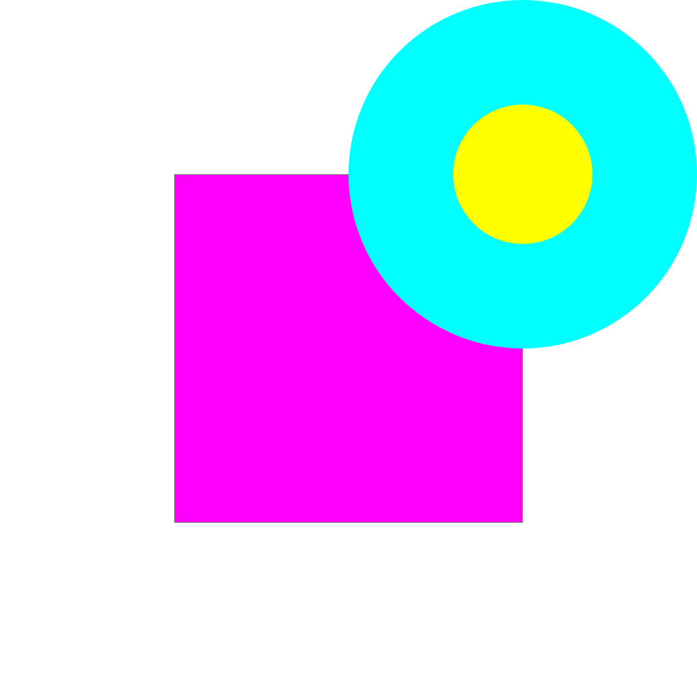

Instructions
- Open Adobe XD.
- If you do not have Adobe XD, open a digital art or design software available to you.
- The software should have the ability to draw basic shapes.
- Create a new file with the dimensions of 1000 by 1000 pixels.
- Make the artboard fill color pure white (hex code #FFFFFF).
- If using an illustration software, use the bucket fill tool to make your lowermost layer #FFFFFF.
- All further instructions will be given for Adobe XD and similar programs.
- Select the rectangle tool.
- Draw a square 500 by 500 pixels.
- Switch back to the arrow tool.
- Drag the square to the exact center of the artboard.
- In the sidebar, change the square's fill color to pure magenta (#FF00FF).
- In XD, there is a default border option. Make sure it's activated for the square. The border should be 1 pixel in width with a color of #707070.
- Select the ellipse tool.
- Draw a circle with the dimensions of 500 by 500 pixels.
- Switch back to the arrow tool.
- Place this circle in the top-right corner so that its edges align with the edges of the artboard.
- In the sidebar, change the circle's fill color to pure cyan (#00FFFF).
- Make sure the circle is in front of the magenta square.
- Make sure the circle has no border.
- Select the ellipse tool again.
- Draw a circle with the dimensions of 200 by 200 pixels.
- Switch back to the arrow tool.
- Drag this smaller circle on top of the bigger one and align it in the center of the larger circle.
- If you're having trouble, the coordinates for this smaller circle in XD should be X=650 and Y=150.
- Make sure the smaller circle is in front of the large one.
- In the sidebar, change the small circle's color to pure yellow (#FFFF00).
- Make sure the small circle has no border.
- Go to File > Export > All Artboards.
- Save the drawing as a PNG file to a folder of your choice.
- Open your school email and create a new message addressed to mpippert@masonlive.gmu.edu
- Attach the PNG to the email and send. You're done!
Original

Recreation